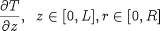
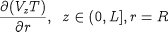
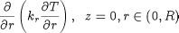

Considering the example presented in Distributed Equations, the following are examples of valid first order partial derivative expressions:
|  | PARTIAL(T,Axial)
|
|  | PARTIAL(Vz(0|+:L, ReactorRadius) * T(0|+:L,ReactorRadius),Radial)
|
|  | PARTIAL(Kr(0,0|+:ReactorRadius|-) * PARTIAL(T(0,0|+:ReactorRadius|-),Radial),Radial)
|
Note that the partial differentiation operator with respect to time is denoted by symbol $ rather than the
operator PARTIAL. Thus:
There are two reasons for this:
The use of $ is consistent with the time derivative operator in lumped systems.
The numerical solution methods in gPROMS treat the time domain quite differently to the explicitly declared distribution domains.